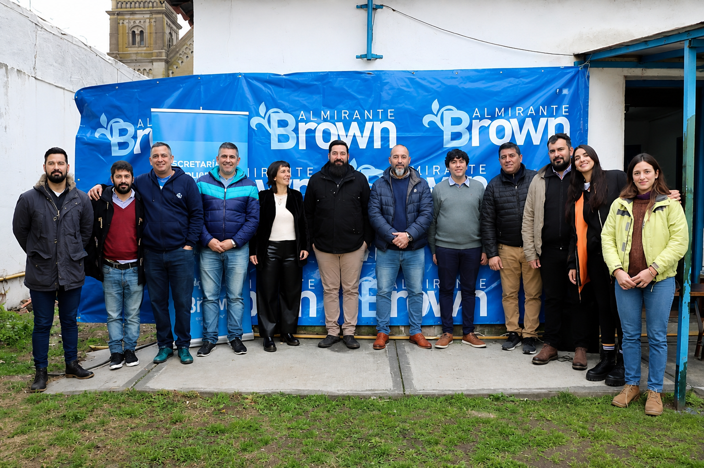

Frente del Centro
Espacio de aprendizaje y oportunidades.

Instalaciones modernas
Ambientes preparados para la práctica.

Comunidad en acción
Vecinos aprendiendo juntos.
En el Centro de Formación para el Trabajo de Rafael Calzada
podés descubrir nuevas oportunidades de crecimiento personal y profesional.
Aquí se dictan cursos gratuitos en oficios como herrería, carpintería, jardinería,
confección textil, moldería y muchos más, pensados para que cada vecino
desarrolle habilidades prácticas y pueda abrir puertas nuevas en el mundo laboral.
Cada capacitación combina teoría y práctica, con docentes especializados y espacios
equipados con las herramientas necesarias para el aprendizaje. Los cursos son de modalidad presencial y
es necesario una asistencia del 75% para aprobarlos. La cantidad de cupos para los cursos es limitada, por
lo que las personas que esten desempleadas y en búsqueda de trabajo tienen prioridad.
Al completar tu capacitación, recibirás certificación oficial del Gobierno y el
Municipio que respalda tu esfuerzo y te ayuda a potenciar tu CV con formación acreditada.
Espacio de aprendizaje y oportunidades.
Ambientes preparados para la práctica.

Vecinos aprendiendo juntos.